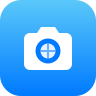

MATLAB Cam
La fotocamera del telefono, l'analisi in MATLAB.
Collegamento al PC…
Questo telefono
PC
Collegati
Questa pagina non è in HTTPS, quindi il browser permette solo le foto singole. Per il video apri il link https del QR code.
Aiuto
Non si collega?
- Telefono e PC devono essere sulla stessa rete: la cosa più semplice è collegare il PC all'hotspot del telefono e premere Aggiorna rete in MATLAB.
- Al primo collegamento il browser avvisa che il certificato non è attendibile: è normale, lo crea il tuo PC. Scegli Mostra dettagli → Visita il sito (iPhone) o Avanzate → Procedi (Android).
- Se il Mac chiede di consentire a MATLAB le connessioni in entrata, rispondi Consenti.